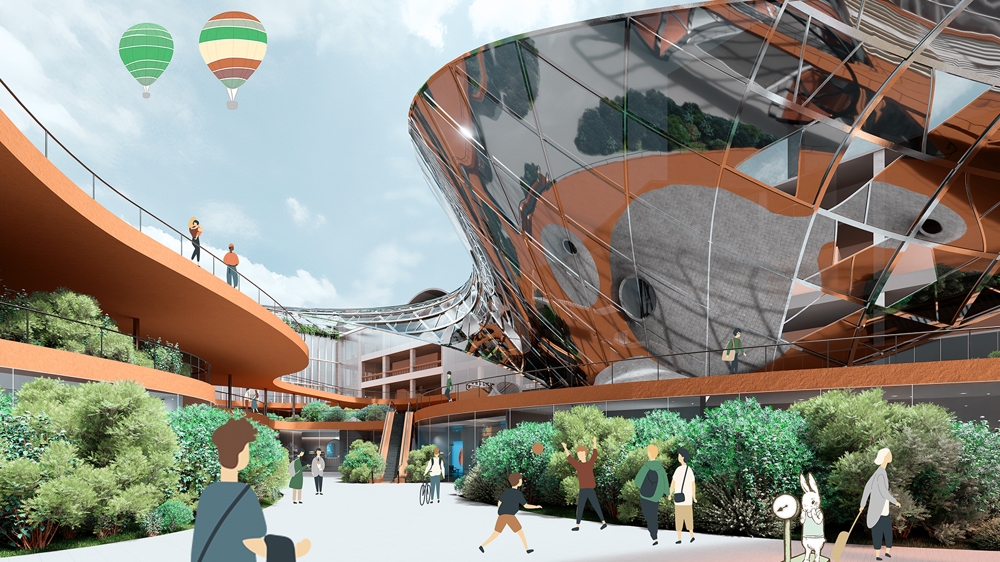
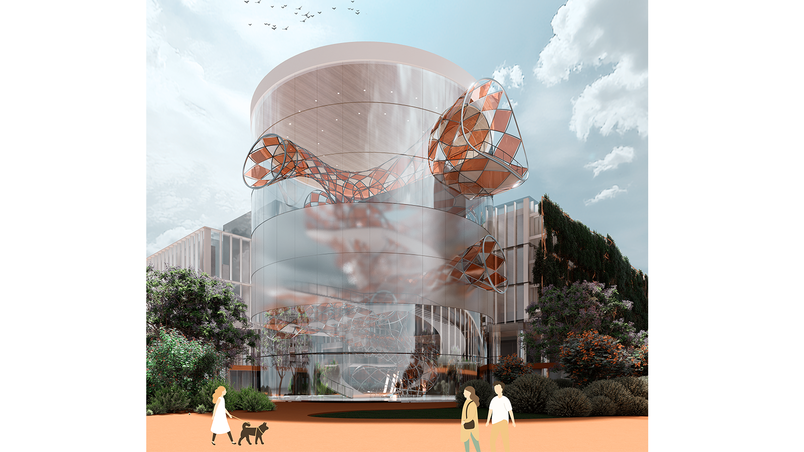
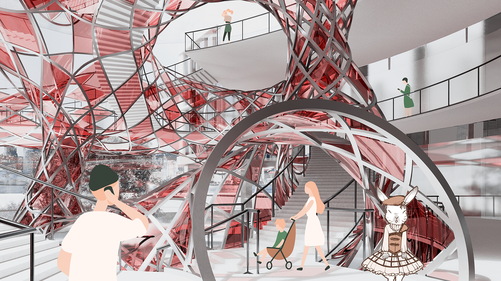
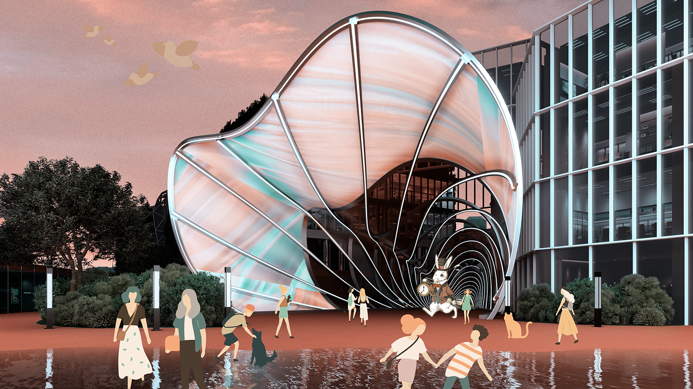
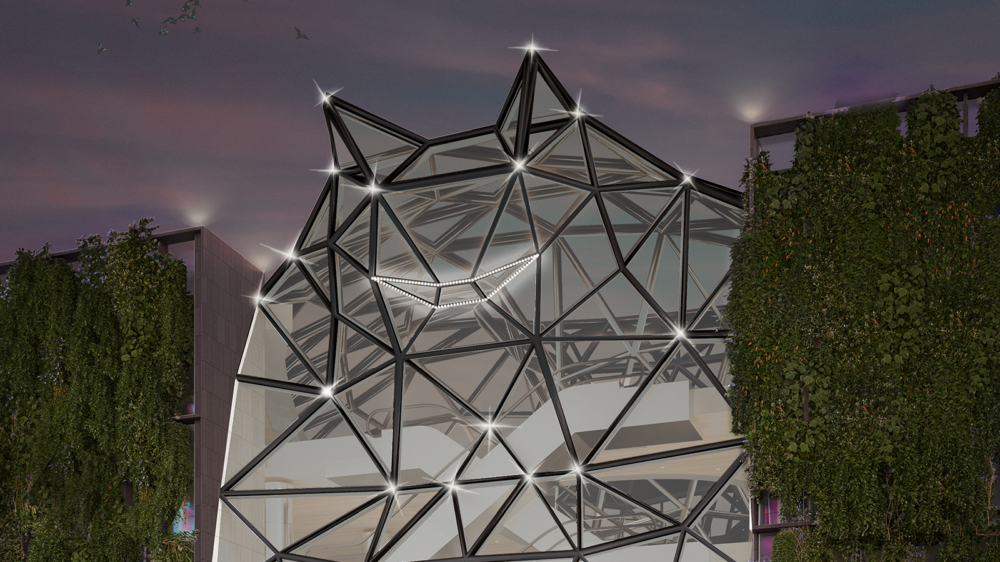
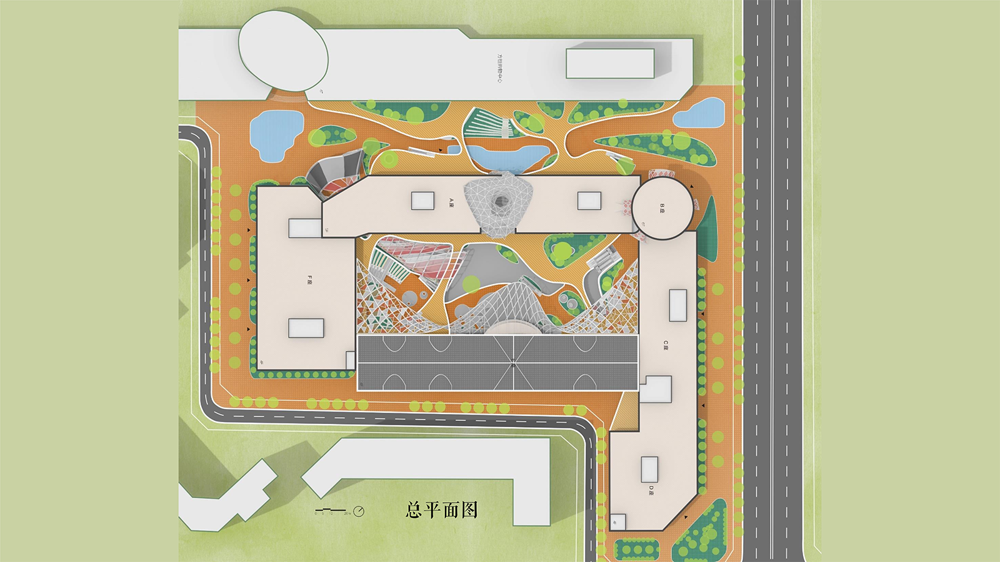
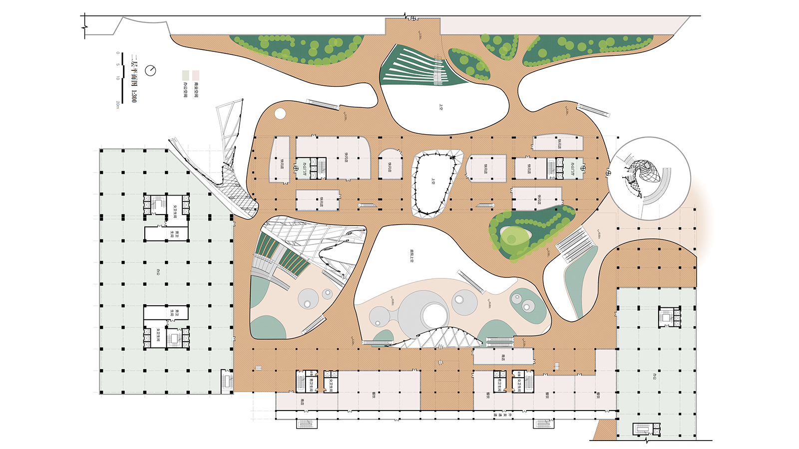
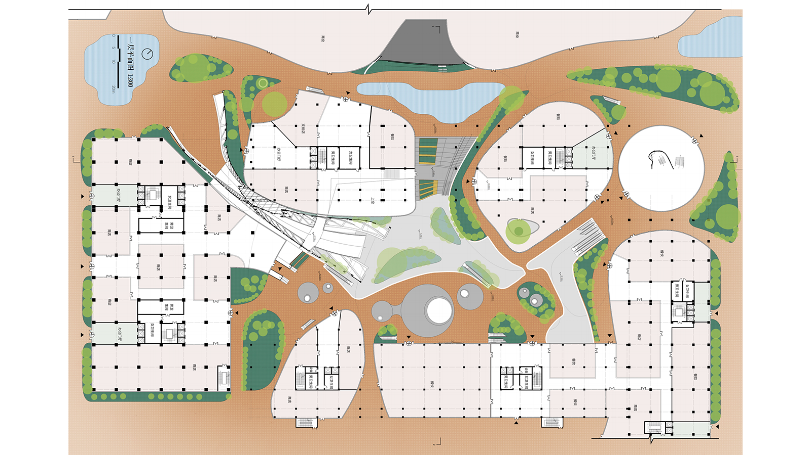
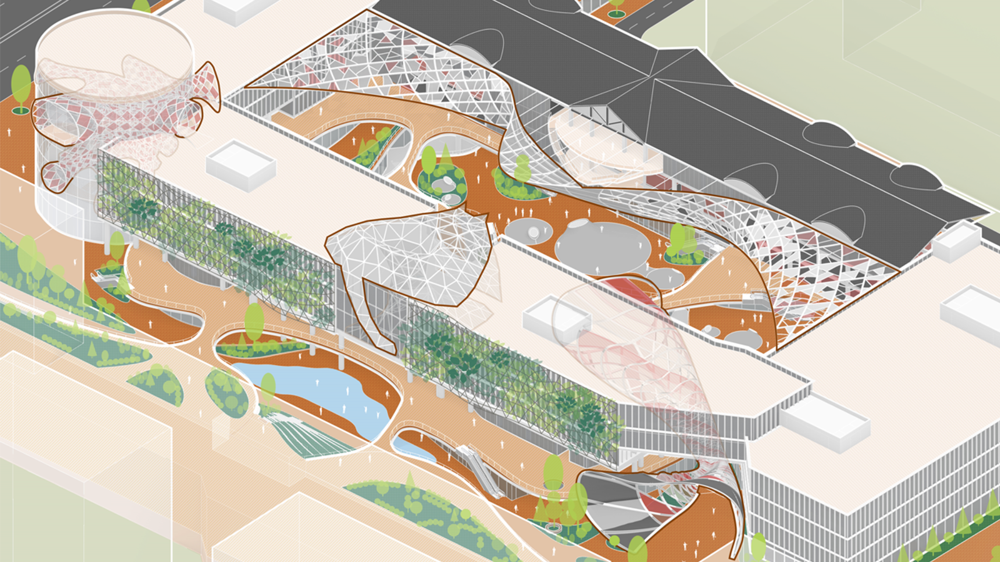

Design
Commercial Plaza Renovation Design Media Architecture
This project addresses the development bottleneck of current commercial plazas by attempting to revitalize the commercial spaces through thematic media architecture. Building upon the existing structures, free-form surfaces are used as the primary form and medium for media architecture, creating an environment themed around Alice in Wonderland. The project further enhances the thematic atmosphere through three key dimensions: lighting design, interactive design, and event planning, resulting in a more attractive and dynamic commercial office complex.







